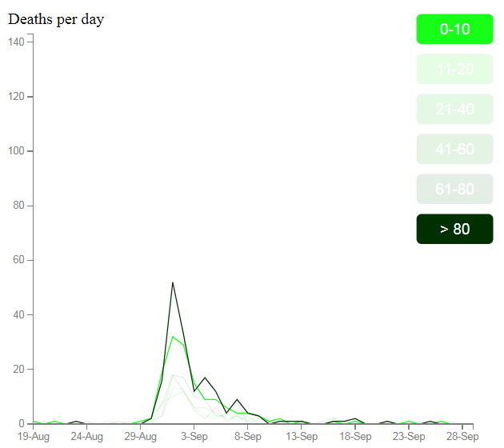

This data visualization was created by Abhishek Bhardwaj as an assignment for H517: "Visualization Design, Analysis, & Evaluation" at IUPUI in Fall 2020, taught by Dr. Khairi Reda. The purpose of the assignment was to reproduce Dr. John Snow's outbreak map (depicted below) as an interactive visualization using JavaScript and the D3 data visualization library.
The street diagrams, pump locations, and death locations were provided as part of the assignment. The instructor also provided fictional demographic data for each death.
To complete this assignment, I had to overcome the following challenges:
- I had one month to complete the project.
- I did not have previous experience with JavaScript and CSS.
- This was my first project with the D3 library.
- Had to understand the concepts about Javascript, CSS and D3 from scratch which took me lot of time and patience
For more on the 1854 Broad Street cholera outbreak, and Dr. John Snow's groundbreaking work in germ theory, epidemiology, and data visualization, please go and check this Article>> Article on Cholera outbreak on Wikipedia.
The source for this project is available on GitHub as IUPUI-H517-Project1-Cholera.

I developed the visualization iteratively. I started by rendering the map, the pumps, and the death locations as the minimum viable product. The instructor provided a detailed rubric for how the project would be graded, and I added the graph and other features one by one according to those requirements and as my time and expertise allowed.
I estimated the placement of the street and building labels by temporarily adding an onclick event to the map. This logged the location of each click for a starting estimate of the label placement. Afterward I commented out the event.
The X scale of the graph was initially separate from an X rangeband scale that I used to draw the gray hoverbars. However, I couldn't get the bars to center over the drawn datapoints, probably due to rounding. I finally figured out how to use the same X scale to place the hoverbars, which makes much more sense than trying to keep parallel scales in synch.
I asked two subjects to provide user testing for the visualization. I simply presented them with the web page and ask them to interact with it. The resulting observations helped me improve the display and clarify the accompanying text.
One of the user test observations was that it is difficult to tell the different shades of green on the By Age graph apart. I experimented with different color schemes, but none of the alternatives seemed to be more clear. Categorical color sets of six colors were not colorblind-safe, and didn't convey a sense of increasing age. Diverging colorsets used pale colors in the mid-range, which weren't visible against the white background. In the end I decided that my initial green shading was as adequate a solution as I was likely to find.
 Obviously, as Dr. Snow found, the locations of the deaths are strongly correlated with the location of the Broad Street pump. Given the fictional demographics provided, it is probably no surprise that there is no significant difference in the rate of deaths between male and female victims. What is much more surprising is the rate of deaths by age. One would suppose the most vulnerable populations would be the very young (0-10) and the very old (> 80), and the deaths by age graph (shown here, filtered to show those populations) seem to bear out that hypothesis. However, estimated census data provided by the instructor suggests that only about 1% of the population falls into the > 80 age range (compared to 28% for the 0-10 age range). And yet at the peak of the outbreak, over 1/3 of the fatalities were from this age range, implying a much higher mortality rate than for the 0-10 age range. If the fictional demographic data is a valid approximation of the real data, one assumes that nobody over the age of 80 survived the outbreak.
John Snow and the cholera outbreak of 1854 with Mike Jay | Medical London and HarvardX